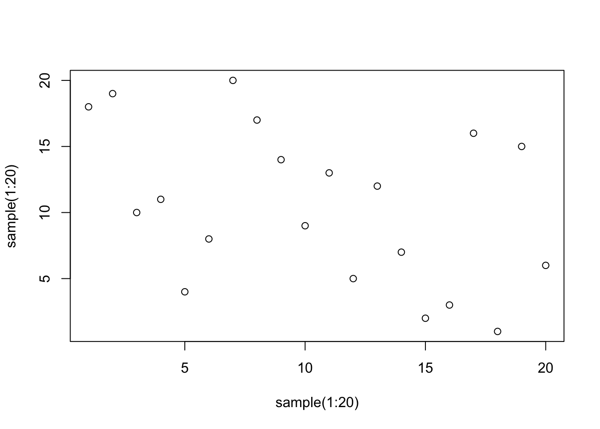

Chapter 7 Data Visualization
Visualizing your data is crucial because it helps you understand the patterns, trends, and relationships within the data. A well-designed visualization can make complex data easy to understand and convey insights that would be hard to discern from raw data.
At the end of this chapter you should be able to:
1. Understand the need for visualization
2. Create some simple plots of points, lines and bars
Anscombe’s quartet is a classic example that demonstrates the importance of visualizing your data. This quartet comprises four datasets with nearly identical simple descriptive statistics. However, when graphed, they have very different distributions and appear very different from one another. This example shows that relying solely on summary statistics to understand data can be misleading and inadequate.
| set | mean_x | var_x | mean_y | var_y | intercept | slope | r.squared |
|---|---|---|---|---|---|---|---|
| A | 9 | 11 | 7.500909 | 4.127269 | 3.000091 | 0.5000909 | 0.6665425 |
| B | 9 | 11 | 7.500909 | 4.127629 | 3.000909 | 0.5000000 | 0.6662420 |
| C | 9 | 11 | 7.500000 | 4.122620 | 3.002454 | 0.4997273 | 0.6663240 |
| D | 9 | 11 | 7.500000 | 4.126740 | 3.000000 | 0.5000000 | 0.6663856 |

In data analysis, creating a plot to convey a message or demonstrate a result is a common endpoint. To achieve this, this book utilizes the GGPlot2 package, which is part of the Tidyverse. This package complements the data pipelining demonstrated in the previous chapters, making it a perfect choice for creating a wide range of plots, from simple scatter plots to complex heat maps, making it ideal for data visualization.
7.1 Base: plot
R comes standard with the fairly basic plotting function plot(). While this function forms the basis for all plotting interactions in R, it can be greatly extended with additional packages. Two such packages will be explored in this chapter, GGplot2 and Plotly. The former is great for static publication quality plots, of which you will begin to recognize, while the latter provides stunning interactive graphics suitable for web development and Shiny applications.


7.2 GGPlot
7.2.1 Syntax
The motivation behind GGplot is based on the grammar of graphics such that
“the idea that you can build every graph from the same few components”
Ideally this accomplishes dual goals of allowing you to quickly construct plots for initial analyses and checking for oddities (as explained above) and following the logical process of the plot construction.
To graph in GGPlot there are a few core embodiments that need to be considered.
| data | a table of numeric and/or categorical values | data.frame or tibble |
| geom | a geometric object or visual representation, that can be layered | points, lines, bars, boxs, etc. |
| aesthetics | how variables in the data are mapped to visual properties | eg. x = col_a, y = col_b |
| coordinate | orientation of the data points | eg. cartesian (x,y), polar |
# the basic structure
ggplot(data, aes(x,y)) + geom_point() + coord_cartiesian()
# combined with dplyr makes for a readable process
data %>% ggplot(aes(x,y)) + geom_point()In this example the ggplot() function contains the two components, the data table data and mapping function aes(). Since GGPlot follows a layered modality, the ggplot() function “sets” the canvas and passes the data table data and mapping function aes() to all the functions that follow with the + operator.
Lets create some data …